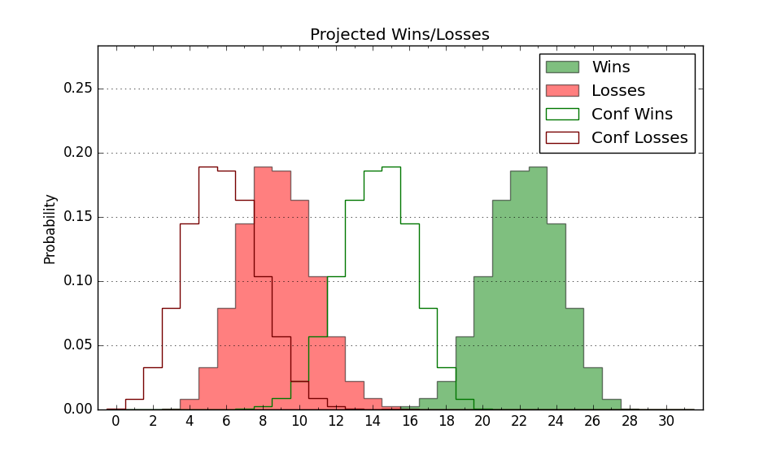

| Home | Game Probabilities | Conferences | Preseason Predictions | Odds Charts | NCAA Tournament |
| City: | Cincinnati, Ohio | |
| Conference: | Big East (1st)
| |
| Record: | 4-0 (Conf) 12-3 (Overall) | |
| Ratings: | Comp.: 20.3 (22nd) Net: 20.4 (22nd) Off: 115.8 (10th) Def: 95.4 (86th) SoR: 85.0 (19th) |
| Remaining | ||||||
|---|---|---|---|---|---|---|
| Date | Opponent | Win Prob | Pred. | |||
| 1/7 | @ Villanova (50) | 49.0% | L 75-76 | |||
| 1/11 | Creighton (17) | 63.3% | W 80-76 | |||
| 1/15 | Marquette (34) | 71.1% | W 85-78 | |||
| 1/18 | @ DePaul (161) | 78.7% | W 85-75 | |||
| 1/21 | Georgetown (171) | 93.6% | W 91-71 | |||
| 1/25 | @ Connecticut (3) | 16.5% | L 71-84 | |||
| 1/28 | @ Creighton (17) | 33.6% | L 76-81 | |||
| 2/1 | Providence (67) | 78.8% | W 84-75 | |||
| 2/4 | St. John's (106) | 88.3% | W 92-76 | |||
| 2/10 | @ Butler (71) | 54.7% | W 75-73 | |||
| 2/15 | @ Marquette (34) | 41.9% | L 80-83 | |||
| 2/18 | DePaul (161) | 92.6% | W 90-71 | |||
| 2/21 | Villanova (50) | 76.6% | W 79-71 | |||
| 2/24 | @ Seton Hall (74) | 56.2% | W 74-72 | |||
| 3/1 | @ Providence (67) | 52.2% | W 80-79 | |||
| 3/4 | Butler (71) | 80.4% | W 79-69 | |||
| Previous | Game Score | |||||
| Date | Opponent | Win Prob | Result | Off | Def | Net |
| 11/7 | Morgan St. (241) | 96.3% | W 96-73 | 1.6 | -4.2 | -2.6 |
| 11/11 | Montana (188) | 94.2% | W 86-64 | 8.2 | -5.3 | 2.9 |
| 11/15 | Fairfield (261) | 96.7% | W 78-65 | -13.3 | -1.1 | -14.4 |
| 11/18 | Indiana (24) | 66.0% | L 79-81 | -2.8 | -16.2 | -19.0 |
| 11/24 | (N) Florida (45) | 61.8% | W 90-83 | 11.5 | -2.3 | 9.2 |
| 11/25 | (N) Duke (18) | 48.3% | L 64-71 | -9.8 | -3.1 | -12.9 |
| 11/27 | (N) Gonzaga (8) | 38.2% | L 84-88 | 4.2 | -3.4 | 0.8 |
| 11/30 | Southeastern Louisiana (277) | 97.3% | W 95-63 | -8.4 | 12.9 | 4.4 |
| 12/3 | West Virginia (21) | 64.3% | W 84-74 | 6.5 | 2.0 | 8.4 |
| 12/10 | @Cincinnati (92) | 63.8% | W 80-77 | -2.3 | 1.5 | -0.8 |
| 12/13 | Southern (222) | 95.6% | W 79-59 | -15.5 | 10.3 | -5.3 |
| 12/16 | @Georgetown (171) | 81.0% | W 102-89 | 18.1 | -12.8 | 5.3 |
| 12/20 | Seton Hall (74) | 81.4% | W 73-70 | -5.9 | -2.9 | -8.7 |
| 12/28 | @St. John's (106) | 68.9% | W 84-79 | -4.2 | 5.2 | 0.9 |
| 12/31 | Connecticut (3) | 40.2% | W 83-73 | 11.8 | 10.9 | 22.7 |
| Stats & Trends | |||||
|---|---|---|---|---|---|
| Current | Day | Week | Month | Season | |
| Composite | 20.3 | +1.6 | +1.2 | +1.1 | +0.6 |
| Comp Rank | 22 | +8 | +4 | +6 | +1 |
| Net Efficiency | 20.4 | +1.9 | +1.4 | +1.5 | -- |
| Net Rank | 22 | +9 | +6 | +17 | -- |
| Off Efficiency | 115.8 | +0.9 | +0.0 | -0.2 | -- |
| Off Rank | 10 | +3 | +2 | +6 | -- |
| Def Efficiency | 95.4 | +1.0 | +1.4 | +1.7 | -- |
| Def Rank | 86 | +12 | +15 | +32 | -- |
| SoS Rank | 35 | +21 | +33 | +77 | -- |
| Exp. Wins | 22.2 | +1.1 | +1.4 | +2.9 | +2.0 |
| Exp. Conf Wins | 14.2 | +1.1 | +1.4 | +2.0 | +1.9 |
| Conf Champ Prob | 22.3 | +13.8 | +15.3 | +11.2 | +4.6 |

| Advanced Stats | ||
|---|---|---|
| Stat | Value | Rank |
| Off Eff FG % | 0.596 | 5 |
| Off Ast Ratio | 0.214 | 1 |
| Off ORB% | 0.304 | 89 |
| Off TO Rate | 0.157 | 148 |
| Off FT Ratio | 0.327 | 141 |
| Def Eff FG % | 0.480 | 113 |
| Def Ast Ratio | 0.144 | 218 |
| Def ORB% | 0.222 | 40 |
| Def TO Rate | 0.169 | 129 |
| Def FT Ratio | 0.278 | 105 |